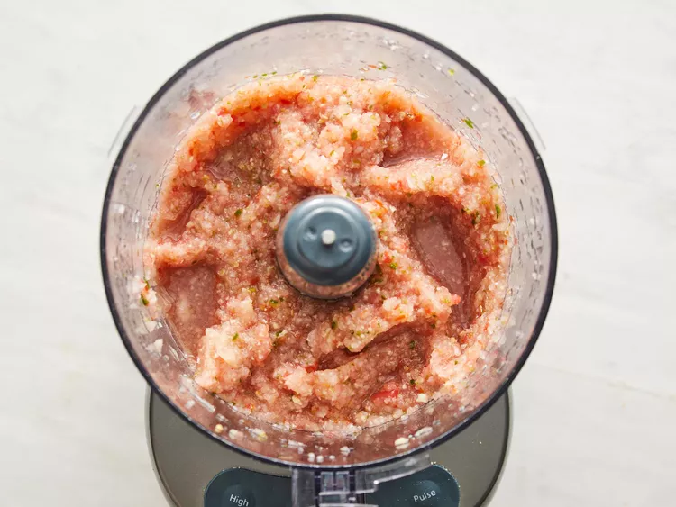
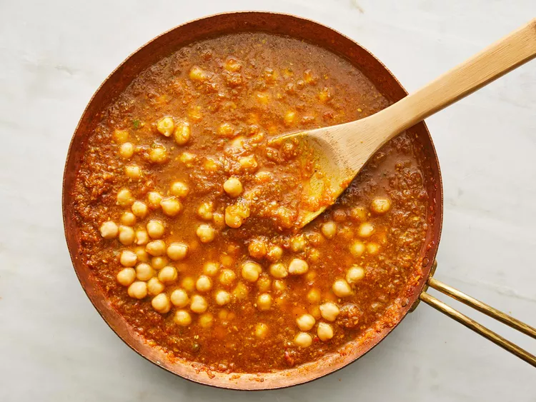

Chana Masala

A savory Indian chickpea curry with tomatoes, onion, and aromatic spices. Perfect served over basmati or jasmine rice.
Ingredients
- 1 onion, chopped
- 1 tomato, chopped
- 1 (1 inch) piece fresh ginger, peeled and chopped
- 4 cloves garlic, chopped
- 1 green chile pepper, seeded and chopped (Optional)
- 3 tablespoons olive oil
- 2 fresh bay leaves
- 1 teaspoon chili powder
- 1 teaspoon coriander powder
- 1 teaspoon garam masala
- ½ teaspoon turmeric powder
- Salt to taste
- Water as needed
- 1 (15 ounce) can chickpeas
- Fresh cilantro leaves, for garnish
Instructions
- Grind onion, tomato, ginger, garlic, and chile pepper together in a food processor into a paste. 
-
Heat olive oil in a large skillet over medium heat. Fry bay leaves until fragrant, about 30 seconds. Pour the paste into the skillet and cook until the oil begins to separate and is golden brown, 2 to 3 minutes.

- Season with chili powder, coriander, garam masala, turmeric, and salt; cook for 2 to 3 minutes. Stir in water for a thick gravy, add chickpeas, and simmer for 5 to 7 minutes. Garnish with cilantro. 